第 2 章 ① 物質三態的特性5 題
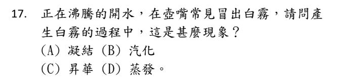
先想清楚：水蒸氣是看不見的。你看得到的白霧，其實是很多很小的水滴。
壺嘴噴出的水蒸氣一碰到冷空氣，就由氣態變回液態 → 這叫凝結。
(B) 汽化是液態變氣態，方向相反。(C) 昇華是固態直接變氣態，這裡沒有固體。(D) 蒸發是汽化的一種，也是液態變氣態。
看到「白霧」「白煙」從熱水冒出來，答案幾乎都是凝結——看得見的一定是小水滴。
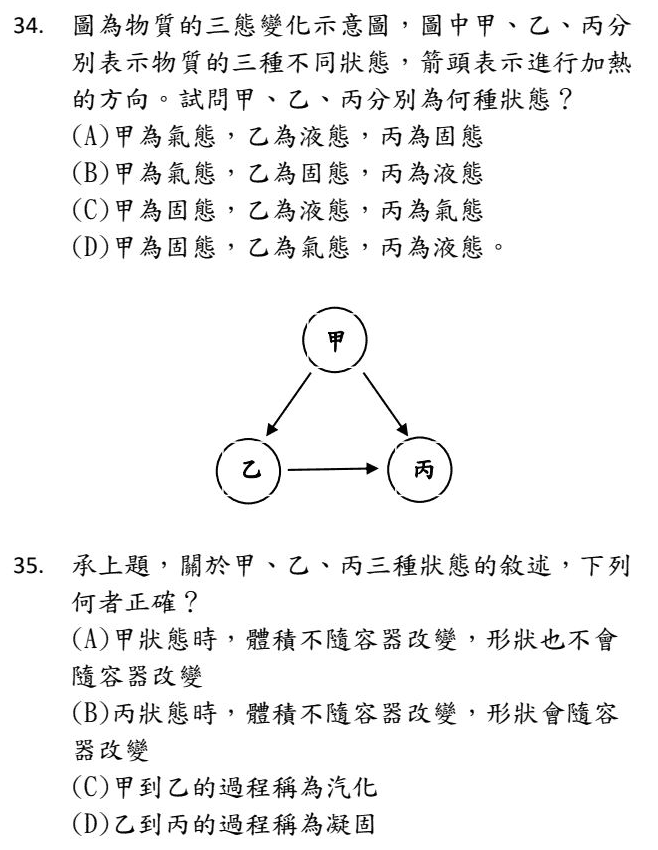
箭頭是加熱的方向，而加熱一定是 固態 → 液態 → 氣態。
甲：只有箭頭出去、沒有箭頭進來 → 最「冷」的狀態 → 固態。
丙：只有箭頭進來 → 最「熱」的狀態 → 氣態。
乙：夾在中間 → 液態。
甲 → 丙 那支箭頭就是固態直接變氣態（昇華）。
(A) 甲是固態：體積固定、形狀也固定，不會隨容器改變 ✓
(B) 丙是氣態：體積和形狀都會隨容器改變。「體積不變、形狀會變」說的是液態。
(C) 甲 → 乙 是固態變液態，叫熔化；汽化是液態變氣態。
(D) 乙 → 丙 是液態變氣態，叫汽化；凝固是液態變固態。
把一個裝有少量熱水和大量水蒸氣的錐形瓶塞緊，放在天平上和砝碼平衡。放一段時間後，瓶內有一部分水蒸氣凝結成小水滴。這時天平會怎樣？
- (A) 錐形瓶那一端往下沉
- (B) 砝碼那一端往下沉
- (C) 仍然保持平衡
- (D) 先往錐形瓶那端沉，再慢慢恢復平衡
水蒸氣變成水只是狀態改變，水的粒子一顆都沒有少；瓶子又塞緊了，粒子跑不出去 → 瓶內總質量不變 → 天平維持平衡。
(A)(D) 以為「變成液體比較重」——同樣的粒子，換個狀態，質量不會變。
三支相同的針筒，出口都用手指堵住，分別裝滿空氣、水、壓得很緊實的細沙。用同樣的力推活塞，哪一支最容易推進去？
- (A) 裝空氣的
- (B) 裝水的
- (C) 裝細沙的
- (D) 三支一樣難推
氣體粒子之間的距離很大，用力一壓，粒子就能擠得更近 → 氣體容易被壓縮。
液體和固體的粒子已經排得很緊密，幾乎壓不下去。（細沙之間雖有空隙，但題目說已經壓得很緊實。）
第 2 章 ② 物質的變化9 題
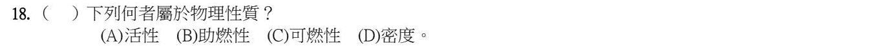
物理性質：不用讓物質變成別的東西，就能觀察或量到——顏色、氣味、密度、熔點、沸點。
化學性質：要在化學變化裡才看得出來——會不會燒（可燃性）、能不能幫忙燃燒（助燃性）、容不容易反應（活性）。
密度用天平和量筒量一量就知道，物質還是原來那個 → 物理性質。
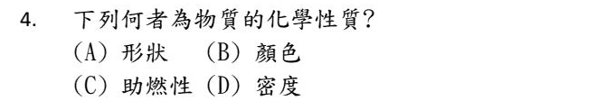
和上一題反過來問。助燃性要真的點火燒燒看才知道，燒完物質就變了 → 化學性質。
(A) 形狀、(B) 顏色、(D) 密度：看一看、量一量就知道，物質沒有改變 → 都是物理性質。
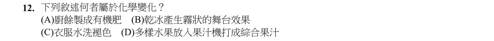
判斷物理／化學變化只問一句：有沒有產生新物質？
(A) 廚餘被微生物分解成肥料，成分完全變了 → 化學變化 ✓
(B) 乾冰昇華成二氧化碳氣體，冷到讓空氣中的水蒸氣凝結成白霧——都只是狀態改變。
(C) 水洗褪色是染料溶到水裡被沖走，染料本身沒變。
(D) 打成果汁只是切碎、混在一起。
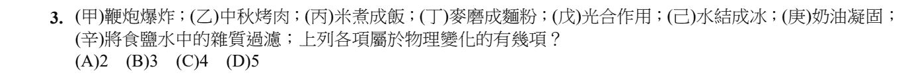
一個一個問「有沒有新物質」：
物理變化：(丁) 麥磨成麵粉（只變形狀）、(己) 水結成冰、(庚) 奶油凝固（三態變化）、(辛) 過濾（只是把東西分開）→ 4 項。
化學變化：(甲) 鞭炮爆炸、(乙) 烤肉、(丙) 米煮成飯、(戊) 光合作用——都產生了新物質，而且回不去了。
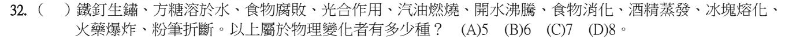
物理變化（沒有新物質）：方糖溶於水、開水沸騰、酒精蒸發、冰塊熔化、粉筆折斷 → 5 種。
化學變化：鐵釘生鏽、食物腐敗、光合作用、汽油燃燒、食物消化、火藥爆炸。
容易猶豫的是「方糖溶於水」：糖只是散開在水裡，把水蒸乾糖就回來了，所以是物理變化。
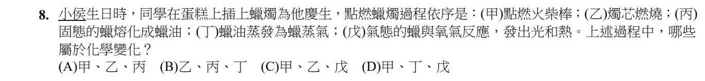
同一根蠟燭，物理變化和化學變化會同時發生。
(甲) 火柴燃燒、(乙) 燭芯燃燒、(戊) 蠟蒸氣和氧氣反應發光發熱 → 燃燒都是化學變化。
(丙) 蠟熔化、(丁) 蠟油蒸發 → 只是三態改變，還是蠟 → 物理變化。
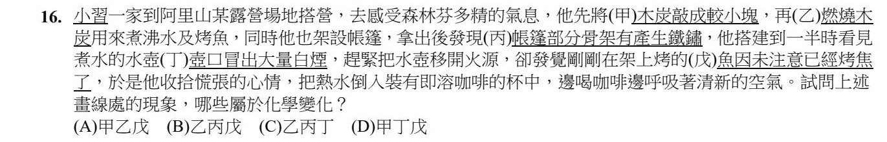
(乙) 燃燒木炭、(丙) 骨架生鐵鏽、(戊) 魚烤焦 → 都產生新物質 → 化學變化。
(甲) 木炭敲碎：只是變小塊，還是木炭。
(丁) 壺口的「白煙」：水蒸氣遇冷凝結成小水滴，是物理變化——它不是真的煙。
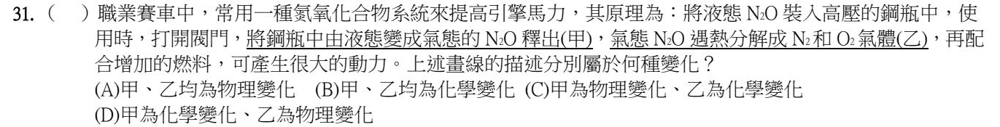
(甲) N₂O 由液態變成氣態：只是三態改變，還是 N₂O → 物理變化。
(乙) N₂O 分解成 N₂ 和 O₂：變成了別的物質 → 化學變化。
化學式改變了，就是有新物質產生。
一包乾燥劑裡放了會變色的指示物：天氣潮溼時由藍色變成粉紅色，拿去晒乾又變回藍色。這種顏色的變化屬於哪一種變化？
- (A) 物理變化，因為可以變回來
- (B) 化學變化，因為指示物和水結合成了不同的物質
- (C) 不是變化，只是光線不同
- (D) 和水無關的變化
課本把這種指示物（氯化亞鈷）吸水變色當作化學變化：它和水結合後變成另一種物質，所以顏色不同；晒乾時水被趕走，又變回原來的物質。
(A) 陷阱：「能變回來」不代表是物理變化。判斷標準只有一個——有沒有產生新物質。
⚠ 出版社解答把氯化亞鈷吸水變色歸為化學變化；如果老師上課的說法不同，以老師為準。
第 2 章 ③ 純物質與混合物8 題
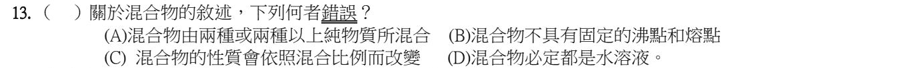
混合物的範圍比你想的大：空氣、合金、泥沙水、牛奶……都是混合物，不一定是水溶液。
(A)(B)(C) 都是混合物的定義和特色：兩種以上物質混合、沒有固定沸點熔點、性質隨比例改變。
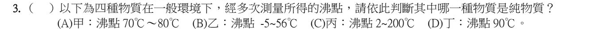
純物質的沸點是固定的一個數字；混合物的成分比例可以不同，沸點會在一個範圍內變動。
甲、乙、丙量了好幾次，沸點都落在一個範圍 → 混合物。只有丁每次都是 90 ℃ → 純物質。
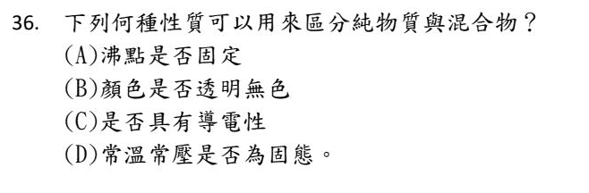
和上一題同一個觀念：沸點（或熔點）固定的是純物質。
(B) 純物質也可以有顏色（例如銅是紅色），混合物也可以透明無色（例如糖水）。
(C) 金屬會導電、食鹽水也會導電，和純不純無關。
(D) 純物質也有氣態、液態的，例如氧氣、水。
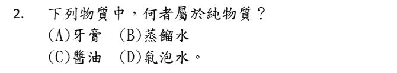
蒸餾水是水加熱成水蒸氣再冷凝收集，只剩下水一種物質 → 純物質。
牙膏、醬油、氣泡水（水 ＋ 二氧化碳 ＋ 其他）都是好幾種東西混在一起 → 混合物。
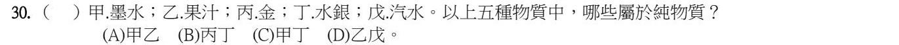
丙 金、丁 水銀（汞）：都只由一種元素組成 → 純物質。
墨水、果汁、汽水：都是很多種成分混合的 → 混合物。
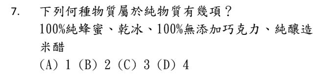
只有乾冰是純物質，它就是固態的二氧化碳。
「100% 純」「無添加」「純釀造」是廣告用語，意思是沒有摻別的東西，不代表只有一種物質：
蜂蜜裡有水和好幾種糖；巧克力裡有可可脂、可可粉等；米醋裡有水、醋酸和其他成分 → 都是混合物。
科學上的「純物質」＝只由一種物質組成，跟商品標籤上的「純」是兩回事。
小翔加熱一種無色透明的液體，發現它在 78 ℃ 開始沸騰，但沸騰時溫度還一直往上升，到 95 ℃ 才全部變成氣體。這種液體最可能是什麼？
- (A) 純物質，因為它是無色透明的
- (B) 混合物，因為沸騰時溫度不固定
- (C) 純物質，因為它會沸騰
- (D) 無法判斷
純物質在一定壓力下，沸騰時溫度固定不變（例如純水在 1 大氣壓下一直維持 100 ℃）。
這種液體沸騰時溫度一路上升 → 裡面有好幾種沸點不同的成分，先沸的先跑掉 → 混合物。
(A) 透明不代表純，糖水也是透明的。
甲 運動飲料、乙 礦泉水、丙 鋼瓶裡的純氧氣、丁 18K 金項鍊、戊 蔗糖晶體、己 碘酒。上述哪些屬於純物質？
- (A) 乙丙
- (B) 丙戊
- (C) 丁戊
- (D) 甲己
只由一種物質組成才是純物質：純氧氣（只有氧）、蔗糖晶體（只有蔗糖）→ 丙、戊。
甲 運動飲料＝水＋糖＋鹽類…；乙 礦泉水含有礦物質；丁 18K 金是金和其他金屬混合的合金；己 碘酒是碘溶在酒精裡。都是混合物。
第 2 章 ④ 混合物的分離7 題
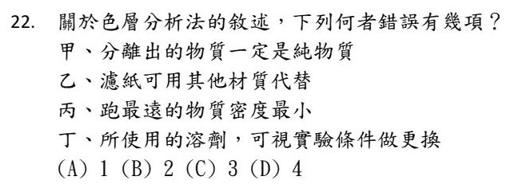
色層分析：混合物的各成分被溶劑帶著在濾紙上跑，跑的速度不同，就會分開。
甲 ✗：跑一樣快的成分會疊在同一個位置，分出來的那一段不一定是純物質。
乙 ✓：濾紙可以換成粉筆、紙巾等其他材質。
丙 ✗：跑多遠是看成分和溶劑、濾紙之間的「拉扯」，和密度無關。
丁 ✓：可以用水，也可以用酒精等其他溶劑。
錯誤的是甲、丙，共 2 項。
分離實驗中，加熱濾液時出現白霧。要確認白霧裡有沒有水，下列哪一種方法正確？
- (A) 用藍色的氯化亞鈷試紙靠近，若變成粉紅色就有水
- (B) 用粉紅色的氯化亞鈷試紙靠近，若變成藍色就有水
- (C) 先蒸發出來的一定是水，不用檢驗
- (D) 只要是白霧，就一定是水
氯化亞鈷試紙乾的時候是藍色，碰到水變成粉紅色，所以用藍色試紙測，變粉紅就代表有水。
(B) 顏色方向反了。(C)(D) 酒精等其他液體也會蒸發、也可能形成白霧，不能只看外觀就下結論。
用濾紙茶包泡茶，下列敘述何者錯誤？
- (A) 茶葉裡的醣類溶到熱水中，屬於化學變化
- (B) 泡好的清澈茶湯是混合物
- (C) 溶在水裡的小粒子能穿過濾紙，茶渣則被留在袋子裡
- (D) 泡茶的過程同時用到了「溶解」和「過濾」
(A) 錯：醣類溶進水裡只是分散到水中，沒有產生新物質 → 物理變化。
(B) 茶湯裡有水、茶多酚、醣類…是混合物。(C)(D) 熱水把可溶成分溶出來（溶解），濾紙袋把粒子大的茶渣擋住（過濾）。
過濾泥水時，下列哪一個做法是一定要避免的？
- (A) 倒入的液面高過濾紙的邊緣
- (B) 沿著玻棒慢慢把液體引流進漏斗
- (C) 先把濾紙沾溼，讓它緊貼漏斗內壁
- (D) 漏斗下端的尖口靠著燒杯內壁
液面如果高過濾紙邊緣，泥水會從濾紙和漏斗之間的縫直接流下去，根本沒有經過濾紙，濾液就不乾淨了。
(B)(C)(D) 都是正確的過濾操作：玻棒引流避免潑灑；濾紙貼緊避免氣泡；尖口靠杯壁讓濾液順著流下、不濺出。
甲、乙兩種固體混在一起。下表是它們在三種液體中的溶解情形，用哪一種液體最容易把甲、乙分開？
液體 P：甲不溶、乙不溶
液體 Q：甲可溶、乙可溶
液體 R：甲可溶、乙不溶
- (A) 液體 P
- (B) 液體 Q
- (C) 液體 R
- (D) 三種都可以
分離的關鍵是找出兩者的差異。在 R 裡甲會溶、乙不會 → 加入 R 攪拌後過濾：乙留在濾紙上，甲在濾液裡，再把濾液蒸發就能拿回甲。
(A) 兩個都不溶、(B) 兩個都溶，沒有差異就分不開。
把食鹽水放在蒸發皿上加熱，最後能得到食鹽晶體。這主要是利用了哪一項性質差異？
- (A) 水的沸點比食鹽低很多，水先變成氣體跑掉
- (B) 食鹽的密度比水大，會沉下去
- (C) 食鹽的顆粒比濾紙孔洞大
- (D) 食鹽會和水發生反應
蒸發法利用的是沸點不同：水 100 ℃ 就沸騰，食鹽要上千度才會沸騰，所以加熱時水先跑掉，食鹽留下。
(C) 是過濾法的原理，但食鹽溶在水裡，粒子很小，會穿過濾紙。(D) 食鹽溶於水沒有產生新物質。
工地用鐵絲篩網把沙堆裡的小石頭篩出來。這和實驗室裡哪一種分離方法的原理相同？
- (A) 蒸發
- (B) 過濾
- (C) 結晶
- (D) 色層分析
篩網和濾紙一樣，是依照顆粒大小把東西分開：比孔小的通過，比孔大的被留下 → 過濾。
(A)(C) 利用沸點或溶解度；(D) 利用各成分在濾紙上移動的速度不同。
第 2 章 ⑤ 溶液的組成4 題
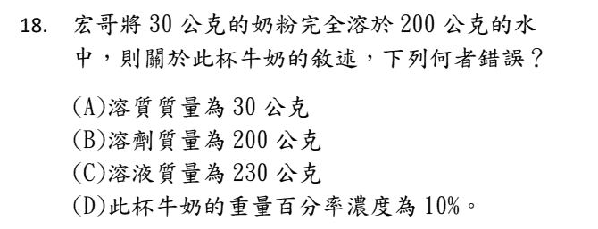
先把三個名字對好：溶質（奶粉）30 g、溶劑（水）200 g、溶液 ＝ 30 ＋ 200 ＝ 230 g。(A)(B)(C) 都對。
(D) 重量百分率濃度 ＝ 溶質 ÷ 溶液 ＝ 30 ÷ 230 × 100% ≈ 13%，不是 10% → 錯。
分母要用溶液 230，不是水 200。
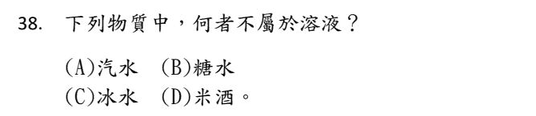
溶液是均勻的混合物：一種東西（溶質）均勻散在另一種東西（溶劑）裡。
冰水 ＝ 冰 ＋ 水，兩個都是 H₂O，只是狀態不同 → 只有一種物質，是純物質，不是溶液。
汽水（二氧化碳溶在水裡）、糖水、米酒（酒精溶在水裡）都是溶液。
消毒用的「75% 酒精」是酒精和水混合成的水溶液，裡面酒精比水還多。這瓶溶液中的溶劑是什麼？
- (A) 酒精，因為酒精的量比較多
- (B) 水，因為水溶液習慣把水當作溶劑
- (C) 酒精和水都是溶質
- (D) 這瓶溶液沒有溶劑
一般「量多的當溶劑」，但課本有一個特別約定：只要溶液裡有水，就稱為水溶液，水一律當溶劑，不管水多還是少。
所以 75% 酒精裡，水是溶劑、酒精是溶質。
在一杯靜止的清水中滴一滴紅墨水，不攪拌，過一陣子整杯水都變成淡紅色。這個現象主要說明了什麼？
- (A) 水和墨水發生了化學反應
- (B) 墨水粒子會沉到杯底
- (C) 物質的粒子會不停地運動，慢慢均勻散開
- (D) 水的溫度一定很高
沒有人攪拌，墨水卻散滿整杯 → 粒子自己在動，從多的地方往少的地方擴散，最後分布均勻（擴散現象）。
(A) 只是混合，沒有新物質。(B) 結果是散開，不是沉澱。(D) 常溫下也會擴散，只是溫度高會比較快。
第 2 章 ⑦ 溶液的飽和14 題
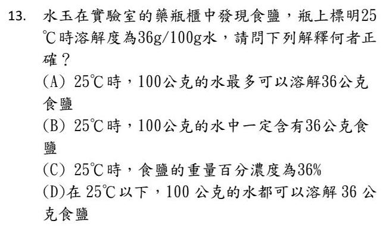
溶解度 36 g／100 g 水的意思：在 25 ℃ 時，100 公克的水最多能溶 36 公克食鹽 → (A) ✓
(B) 是「最多」，不是「一定含有」。只溶 10 克也可以。
(C) 溶解度的分母是水，濃度的分母是溶液。飽和時的濃度 ＝ 36 ÷ (100 ＋ 36) ≈ 26.5%，不是 36%。
(D) 溶解度會隨溫度改變。食鹽溫度愈低溶解度愈小，所以 25 ℃ 以下不一定溶得了 36 克。
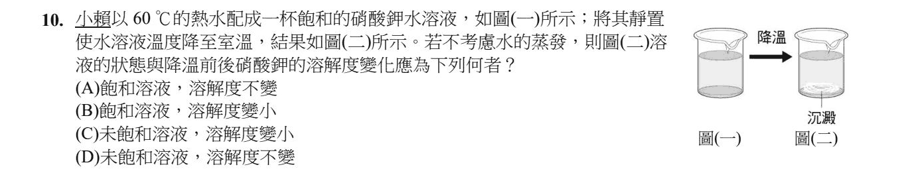
圖(二)杯底有沉澱 → 有溶不下去的硝酸鉀 → 這杯溶液是飽和溶液。所以 (C)(D) 的「未飽和」錯。
為什麼會沉澱？因為硝酸鉀的溶解度溫度愈低愈小，降溫後水溶不下那麼多，多的就析出來 → 溶解度變小。
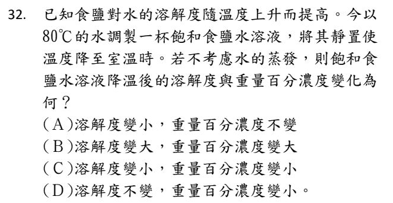
溫度降 → 溶解度變小 → 溶不住的鹽析出結晶 → 留在水裡的溶質變少 → 濃度跟著變小。
關鍵在一句沒寫出來的話：降溫之後它仍然是飽和溶液（杯底有結晶就是證據）。而飽和溶液的濃度是被溶解度綁死的——溶解度動，濃度就一定跟著動。
選 (A) 的想法通常是「水沒少、鹽也還在杯子裡，所以濃度不變」。但析出的結晶已經不算在溶液裡了。
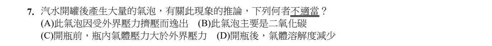
汽水是在高壓下把大量二氧化碳壓進水裡 → 瓶內壓力比外面大 (C) ✓，氣泡主要是二氧化碳 (B) ✓。
開瓶後，瓶內壓力變小，氣體的溶解度跟著變小 (D) ✓，溶不住的二氧化碳就冒出來。
(A) 說「受外界壓力擠壓而逸出」，方向講反了——是因為壓力變小才跑出來，不是被擠出來。
氣體的溶解度：壓力愈大愈容易溶、溫度愈高愈難溶（所以汽水要冰）。
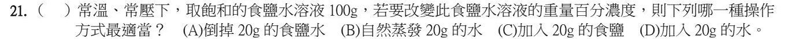
關鍵：這杯已經是飽和食鹽水，濃度已經「頂到天花板」了。
(A) 倒掉一些：溶液是均勻的，剩下的濃度不變。
(B) 蒸發掉水：多出來的鹽會析出，溶液仍然飽和，濃度不變。
(C) 加鹽：已經溶不下了，加的鹽沉在杯底，濃度不變。
(D) 加水：溶液變成未飽和，濃度變小 ✓
溫度不變時，飽和溶液的濃度是固定的。要改變它，只能加水稀釋（或改變溫度）。
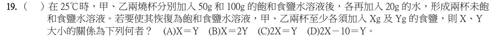
原本的 50 g 和 100 g 都是飽和溶液，裡面的水都已經「吃飽」了。
真正需要補鹽的，只有後來加進去的 20 g 水。兩杯加的水一樣多 → 要補的鹽也一樣多 → X ＝ Y。
原本溶液有多少，在這題是故意放來干擾你的。
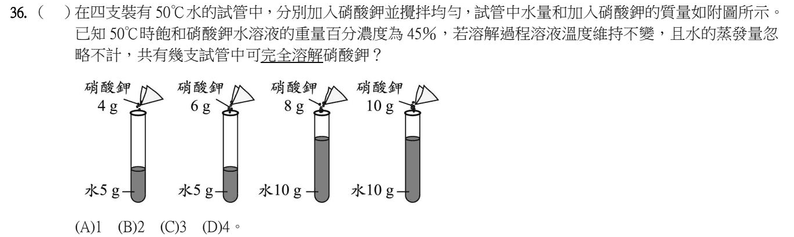
先把 45% 換成「每克水能溶多少」：飽和溶液 100 g 裡有硝酸鉀 45 g、水 55 g → 每 1 g 水最多溶約 0.82 g。
水 5 g：最多溶約 4.1 g → 放 4 g 全溶 ✓、放 6 g 溶不完 ✗
水 10 g：最多溶約 8.2 g → 放 8 g 全溶 ✓、放 10 g 溶不完 ✗
可以完全溶解的有 2 支。
不要直接拿 45% 去乘水的質量——45% 的分母是溶液，不是水。
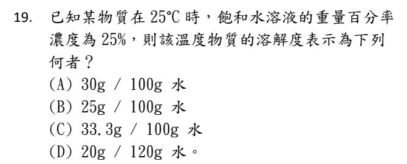
這題就是在叫你把分母換掉：濃度的分母是溶液，溶解度的分母是水。
25% 飽和 → 每 100 g 溶液裡：溶質 25 g、水 75 g。
換算成 100 g 水：25 ÷ 75 × 100 ＝ 33.3 g。
(B) 是把 25% 直接抄成 25 g/100 g 水——等於根本沒換分母。(D) 的分母不是 100 g 水，光形式就不合溶解度的定義。
兩個公式長得很像，差別只在分母。寫下算式前先問自己：我現在的分母是誰？
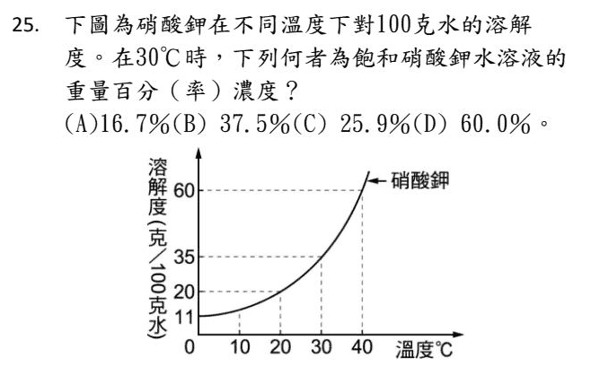
從圖上讀：30 ℃ 時，硝酸鉀的溶解度是 35 g／100 g 水。
飽和溶液：溶質 35 g、溶液 100 ＋ 35 ＝ 135 g → 濃度 ＝ 35 ÷ 135 × 100% ≈ 25.9%。
(A) 16.7% ＝ 20 ÷ 120，是 20 ℃ 的答案。(D) 把 40 ℃ 的 60 直接當成 %，而且分母也沒算。
溶解度 → 濃度：分母要從「100 g 水」換成「100 g 水 ＋ 溶質」。
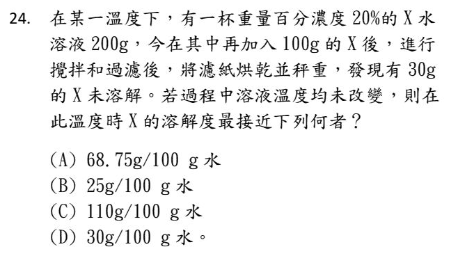
原溶液：溶質 ＝ 200 × 20% ＝ 40 g，水 ＝ 160 g。
再加 100 g，X 共 140 g，未溶 30 g → 溶解了 110 g，而水從頭到尾都是 160 g。
溶解度問的是「每 100 克水能溶多少」→ 110 ÷ 160 × 100 ＝ 68.75。
(C) 110 是直接把溶解量當答案，忘了換算成 100 克水。溶解度是一個比率，不是一個總量。
在固定溫度下，小庭把不同質量的硫酸銅分別加進 20 g 水中，充分攪拌後秤出沒溶解的量：
加 2 g → 剩 0 g；加 4 g → 剩 0 g；加 6 g → 剩 0.8 g；加 8 g → 剩 x g。
x 應該是多少？
- (A) 0.8
- (B) 1.6
- (C) 2.8
- (D) 3.2
從「加 6 g 剩 0.8 g」可知：20 g 水在這個溫度最多溶 6 − 0.8 ＝ 5.2 g。
加 8 g 時一樣最多只溶 5.2 g → 剩下 8 − 5.2 ＝ 2.8 g。
(B) 以為「多加 2 g，剩下的也多 2 倍」——飽和以後多加的會全部剩下，不是按比例。
某物質在 20 ℃ 時的溶解度是每 1 公升水 2.4 g。小俊把一些該物質加進 4 公升的熱水中，全部溶解；冷卻到 20 ℃ 後，析出 6.4 g 晶體（不考慮水分蒸發）。他原本放入多少公克？
- (A) 6.4
- (B) 9.6
- (C) 16.0
- (D) 22.4
冷到 20 ℃ 後，水裡還留著的（飽和）＋ 析出的 ＝ 原本放入的。
4 公升水在 20 ℃ 最多溶 2.4 × 4 ＝ 9.6 g，再加上析出的 6.4 g → 9.6 ＋ 6.4 ＝ 16.0 g。
(A) 只算析出的；(B) 只算溶在水裡的；兩部分都要加。
同一溫度下，甲杯裝 100 g 水、乙杯裝 200 g 水，各加入足量的食鹽充分攪拌，結果兩杯杯底都剩下 5 g 沒溶解的食鹽。下列敘述何者錯誤？
- (A) 兩杯一樣鹹
- (B) 兩杯都是飽和溶液
- (C) 兩杯已經溶解的食鹽一樣多
- (D) 要讓杯底的食鹽全部溶解，兩杯需要再加的水一樣多
(C) 錯：溶得了多少要看水量。乙杯水是甲杯的 2 倍，溶掉的食鹽也是甲杯的 2 倍。
(A)(B) 杯底都有剩 → 都飽和 → 同溫度下飽和溶液的濃度相同，一樣鹹。(D) 兩杯都剩 5 g，溶解度相同，溶掉 5 g 需要的水量也相同。
同溫度下泡兩杯鹽水：甲杯杯底還有少許鹽溶不掉，乙杯的鹽全部溶解、喝起來比甲淡。把兩杯（連同甲杯底的鹽）倒在一起變成丙杯，攪拌後丙杯杯底仍有一點點鹽沒溶解。甲、乙、丙三杯的濃度大小關係為何？
- (A) 甲＞丙＞乙
- (B) 甲＝乙＞丙
- (C) 甲＝丙＞乙
- (D) 甲＝乙＝丙
甲杯底有剩 → 飽和。丙杯底還有剩 → 也是飽和。同溫度下飽和溶液濃度都一樣 → 甲 ＝ 丙。
乙全部溶解又比甲淡 → 未飽和，濃度最小。所以 甲 ＝ 丙 ＞ 乙。
(A) 以為「混進淡的會變淡」——但丙杯還有鹽可以繼續溶，會一直溶到飽和為止。
第 2 章 ⑧ 濃度24 題
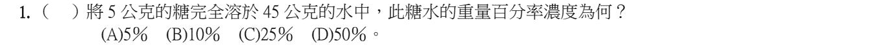
重量百分率濃度 ＝ 溶質 ÷ 溶液 × 100%。
溶液 ＝ 糖 5 g ＋ 水 45 g ＝ 50 g → 5 ÷ 50 × 100% ＝ 10%。
如果寫成 5 ÷ 45，就是把分母錯當成水了。
400 公克是整杯鹽水（溶液）。
鹽 ＝ 400 × 5% ＝ 20 g；水 ＝ 400 − 20 ＝ 380 g。
(B) 把 400 當成水，忘了鹽水裡也包含鹽。
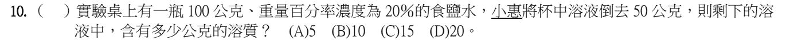
倒掉一部分溶液，濃度不變，還是 20%。
剩下 100 − 50 ＝ 50 g 溶液 → 溶質 ＝ 50 × 20% ＝ 10 g。
(D) 20 g 是原本整瓶的溶質，倒掉一半，溶質也跟著少一半。
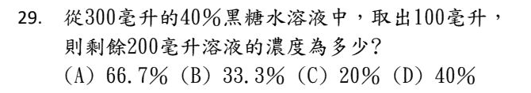
濃度是比值，不是總量。溶液是均勻的，隨便舀一瓢出來，那一瓢和剩下的濃度都還是 40%。
會被騙的人，是把「東西變少了」直接翻譯成「濃度變小了」。
要讓濃度真的改變，只有三條路：加溶質、加溶劑、讓溶劑蒸發。單純倒掉一部分——分子分母同時等比例變少，比值不動。
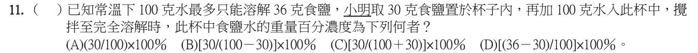
先檢查溶不溶得完：30 g ＜ 36 g → 全部溶掉。
溶液 ＝ 鹽 30 ＋ 水 100 ＝ 130 g → 濃度 ＝ 30 ÷ 130 × 100% → (C)。
(A) 分母寫成水了。(B) 100 − 30 沒有意義。(D) 36 − 30 是「還能再溶幾克」，不是濃度。
重量百分濃度的分母是溶液，裡面一定包含溶質自己。
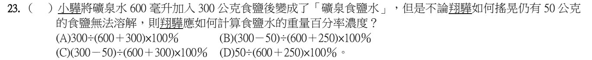
沒溶解的那 50 公克是沉在杯底的固體，它不在溶液裡，所以分子、分母都要把它扣掉。
溶質 ＝ 300 − 50 ＝ 250 g
溶液 ＝ 水 600 g ＋ 溶解的 250 g ＝ 850 g
(C) 的分子扣了、分母卻沒扣——只扣一半是最多人踩的坑。你可以這樣檢查：分母永遠等於「水 ＋ 分子」。
補充：題目給的是礦泉水 600 毫升，這裡用水的密度 1 g/mL 換成 600 公克來算。
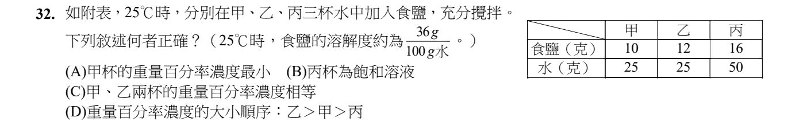
先算每杯水最多能溶多少：溶解度 36 g／100 g 水 → 25 g 水最多溶 9 g，50 g 水最多溶 18 g。
甲：放 10 g，只溶 9 g → 飽和，濃度 9 ÷ 34 ≈ 26.5%
乙：放 12 g，也只溶 9 g → 飽和，濃度 9 ÷ 34 ≈ 26.5%
丙：放 16 g ＜ 18 g，全溶 → 未飽和，濃度 16 ÷ 66 ≈ 24.2%
甲、乙濃度相等 → (C) ✓。(A) 最小的是丙。(B) 丙還沒飽和。(D) 乙和甲一樣大。
沒溶掉、沉在杯底的鹽不算溶質。乙多放的鹽只是多沉一點。
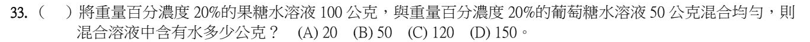
兩杯濃度都是 20%，混合後還是 20% → 水占 80%。
總質量 100 ＋ 50 ＝ 150 g → 水 ＝ 150 × 80% ＝ 120 g。
（分開算也可以：100 × 80% ＋ 50 × 80% ＝ 80 ＋ 40 ＝ 120。）
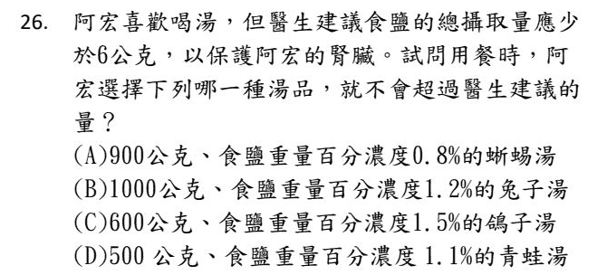
每一碗算出食鹽有幾克：湯的質量 × 濃度。
(A) 900 × 0.8% ＝ 7.2 g
(B) 1000 × 1.2% ＝ 12 g
(C) 600 × 1.5% ＝ 9 g
(D) 500 × 1.1% ＝ 5.5 g ＜ 6 g ✓
濃度最低的 (A) 反而鹽最多——因為湯也最多。要比的是「鹽有幾克」，不是濃度。
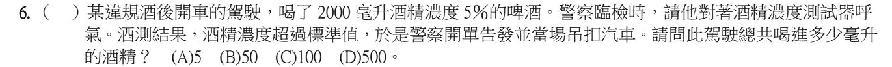
酒精量 ＝ 啤酒體積 × 濃度 ＝ 2000 × 5% ＝ 100 毫升。
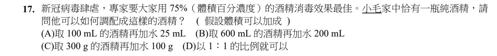
體積百分濃度 ＝ 酒精體積 ÷ 溶液體積 × 100%。
(B) 600 ÷ (600 ＋ 200) ＝ 600 ÷ 800 ＝ 75% ✓
(A) 100 ÷ 125 ＝ 80%。(C) 給的是公克，題目要的是體積百分濃度，單位對不上。(D) 1：1 是 50%。
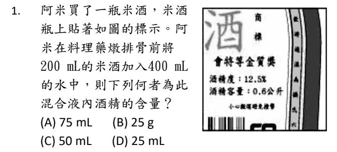
酒精只從米酒來：200 × 12.5% ＝ 25 mL。加水只會把濃度稀釋掉，酒精一滴都沒有多出來。
(A) 75 mL 是把 600 mL 全部當成米酒算的（600 × 12.5%）——等於認為「加水會生出酒精」。
(B) 單位就錯了：體積百分濃度算出來是體積，不是公克。
看到「加水稀釋」四個字，先問一句：溶質的量有變嗎？答案幾乎永遠是「沒有」。
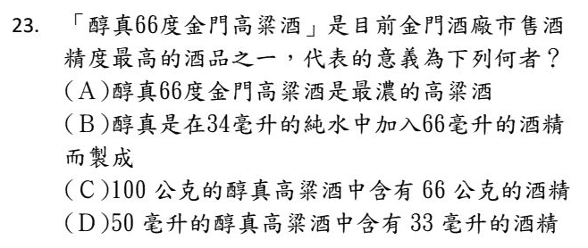
酒的「度」就是體積百分濃度：66 度 ＝ 每 100 毫升酒裡有 66 毫升酒精。
50 毫升 × 66% ＝ 33 毫升 → (D) ✓
(A) 題目只說是「最高的之一」，不能說它就是最濃的。
(B) 66 度是指做好的酒每 100 毫升含 66 毫升酒精；酒精和水混合後體積會略微縮小，不能說成「34 毫升水加 66 毫升酒精」。
(C) 66 度是體積比，不是質量比，不能寫成 100 公克含 66 公克。
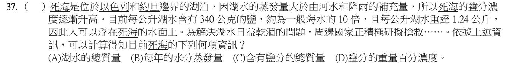
題目給的是每 1 公升的資料：鹽 340 公克、湖水 1.24 公斤 ＝ 1240 公克。
→ 鹽分的重量百分濃度 ＝ 340 ÷ 1240 × 100% ≈ 27.4%，可以算出來 ✓
(A)(C) 要算總量，必須知道整座湖有幾公升，題目沒給。(B) 蒸發量完全沒有數據。
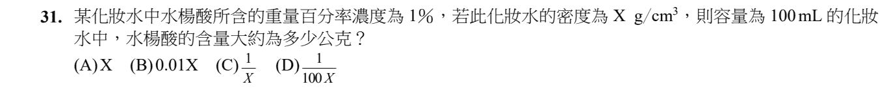
濃度是用質量算的，所以先把 100 mL 換成質量：100 cm³ × X g/cm³ ＝ 100X 公克。
水楊酸 ＝ 100X × 1% ＝ X 公克。
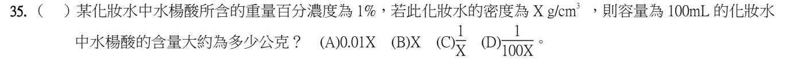
和 112 學年度那一題一模一樣，只是選項順序換了。
化妝水質量 ＝ 100 × X ＝ 100X 公克 → 水楊酸 ＝ 100X × 1% ＝ X 公克 → 這次是 (B)。
考古題要記算法，不要背選項代號。
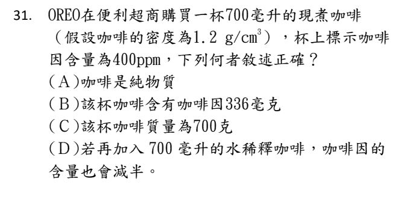
ppm 的分母是質量，所以第一步一定是把毫升換成公克：700 × 1.2 ＝ 840 g（所以 (C) 錯，而且那個密度就是為了這一步給的）。
400 ppm ＝ 每 1 公斤含 400 毫克 → 0.84 kg × 400 ＝ 336 毫克 ✓
(D) 加水稀釋，咖啡因的含量（總毫克數）完全不變——變小的是濃度。而且 840 g 變成 1540 g，也不是剛好兩倍。「含量」和「濃度」是兩個字，段考很愛在這裡換掉。
(A) 咖啡是混合物。
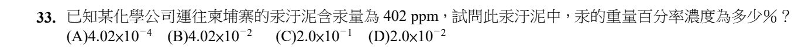
ppm ＝ 百萬分之一。402 ppm ＝ 402 ÷ 1,000,000 ＝ 0.000402。
換成百分率要再 × 100% → 0.0402% ＝ 4.02 × 10⁻² %。
(A) 4.02 × 10⁻⁴ 是還沒乘 100 的比值，不是「%」。
快速換算：1% ＝ 10000 ppm，所以 ppm 換 % 就是除以 10000。
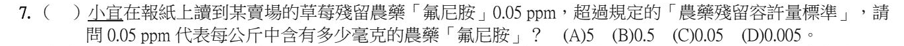
1 公斤 ＝ 1000 公克 ＝ 1,000,000 毫克。
所以 1 ppm ＝ 每公斤含 1 毫克 → 0.05 ppm ＝ 每公斤含 0.05 毫克。
好記的對應：ppm ＝ 毫克／公斤。
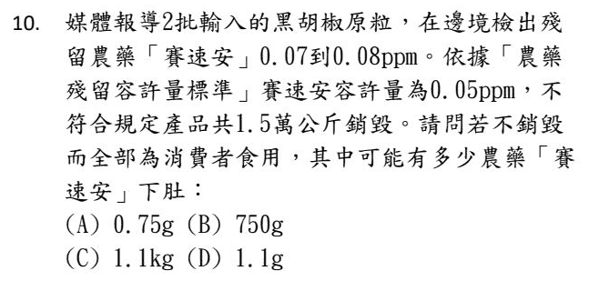
用上一題的對應：1 ppm ＝ 每公斤 1 毫克。
15000 公斤 × 0.07 毫克 ＝ 1050 毫克；15000 × 0.08 ＝ 1200 毫克 → 大約 1.05～1.2 公克 → 約 1.1 g。
(A) 0.75 g 是用「容許量 0.05 ppm」算的，但題目問的是實際檢出的量。(B)(C) 單位換算錯了。
酒駕標準之一是血液中酒精濃度達到每 100 mL 血液含 30 mg 酒精。某人血液共 5000 mL，假設喝下的酒精全部進入血液且分布均勻，酒精密度 0.8 g/cm³。他只喝下列哪一杯時，不會達到這個標準？
- (A) 酒精濃度 5% 的啤酒 300 mL
- (B) 酒精濃度 12% 的紅酒 15 mL
- (C) 酒精濃度 20% 的清酒 20 mL
- (D) 酒精濃度 40% 的威士忌 10 mL
先算門檻：5000 mL 血液 ＝ 50 個 100 mL，50 × 30 ＝ 1500 mg ＝ 1.5 g 酒精。
每杯酒精的質量 ＝ 酒的體積 × 濃度 × 0.8：
(A) 300 × 5% ＝ 15 mL → 12 g (B) 15 × 12% ＝ 1.8 mL → 1.44 g (C) 20 × 20% ＝ 4 mL → 3.2 g (D) 10 × 40% ＝ 4 mL → 3.2 g
只有 (B) 的 1.44 g 小於 1.5 g，不會達到標準。（這裡酒的濃度是體積百分率濃度，所以先算酒精的體積，再用密度換成質量。）
某地規定現煮咖啡依每杯咖啡因總量標示顏色：201 mg 以上標紅色、101～200 mg 標黃色、100 mg 以下標綠色。一杯 360 g、咖啡因濃度 450 ppm 的拿鐵應標示哪一種顏色？
- (A) 紅色
- (B) 黃色
- (C) 綠色
- (D) 不知道溫度，無法判斷
1 ppm ＝ 百萬分之一，相當於每 1 公斤含 1 毫克。450 ppm ＝ 每公斤 450 mg。
360 g ＝ 0.36 kg → 0.36 × 450 ＝ 162 mg → 落在 101～200 mg → 黃色。
一瓶 600 公克的糖漿，標籤寫著：「糖分 70%、水分 30%；糖分中果糖占 75%、葡萄糖占 25%」。這瓶糖漿含果糖多少公克？
- (A) 315
- (B) 420
- (C) 450
- (D) 180
分兩層算：先算糖，再算糖裡的果糖。
糖分 ＝ 600 × 70% ＝ 420 g；果糖 ＝ 420 × 75% ＝ 315 g。
(B) 只算到糖分；(C) 是 600 × 75%，跳過了「糖分只占 70%」這一層。
鮮乳依乳脂肪含量（重量百分率）分類：全脂 3.0% 以上、中脂 1.5%～3.0%、低脂 0.5%～1.5%、脫脂 0.5% 以下。某牧場的鮮乳每 400 g 含乳脂肪 5.2 g，應標示為哪一種？
- (A) 全脂
- (B) 中脂
- (C) 低脂
- (D) 脫脂
重量百分率濃度 ＝ 5.2 ÷ 400 × 100% ＝ 1.3% → 介於 0.5%～1.5% → 低脂。
第 2 章 ⑨ 空氣的組成11 題
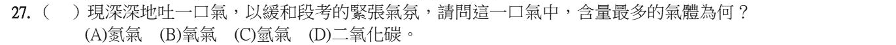
呼出的氣體裡，氧氣少了一些、二氧化碳多了一些，但氮氣身體用不到，吸進去多少就吐出多少。
所以呼出的氣體中，最多的還是氮氣（將近八成）。
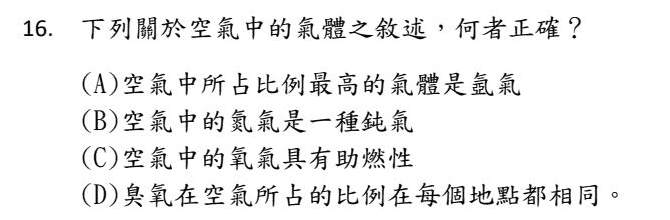
(C) 氧氣能幫助燃燒（助燃性）✓
(A) 空氣中最多的是氮氣（約 78%），氬氣只有約 0.9%。
(B) 氮氣雖然不太活潑，但鈍氣指的是氬氣這一類。
(D) 臭氧的多寡每個地方不一樣，例如高空臭氧層就比較多。
對照比例：甲 78% ＝ 氮氣、乙 21% ＝ 氧氣、丙 0.9% ＝ 氬氣、丁 0.1% ＝ 其他氣體（二氧化碳等好幾種）。
(B) 丁是好幾種氣體加起來 → 混合物 ✓
(A) 焊接時用來隔絕氧氣的是氬氣（丙）。
(C) 不易反應的鈍氣是氬氣（丙），丁不是單一種氣體。
(D) 乙是氧氣，會助燃，線香會燒得更旺，不會熄滅。
大理石 ＋ 鹽酸 → 產生二氧化碳（甲 ✓）。
二氧化碳會使澄清石灰水變混濁（乙 ✓）；無色無臭、不助燃也不可燃（丁 ✓）。
丙 ✗：二氧化碳不助燃，線香放進去會熄滅。讓線香燒得更旺的是氧氣。
汽水裡溶了大量的二氧化碳。
開罐時壓力變小，二氧化碳溶不住就冒出來；加入鹽巴，鹽粒讓溶在水裡的二氧化碳更容易聚成氣泡跑出來。
兩種情況都只是把原本溶在汽水裡的二氧化碳「放出來」，沒有產生氧氣。
（題目表格寫子、丑、寅，選項問甲、乙、丙，指的是同樣三瓶，依序對應。）
子：不助燃、難溶於水、石灰水無反應 → 氮氣。
丑：會使石灰水混濁、微溶於水 → 二氧化碳。
寅：有助燃性 → 氧氣。
三種氣體各有一個「招牌」：氧氣助燃、二氧化碳使石灰水混濁、氮氣兩個都沒有。
這是用雙氧水和二氧化錳製氧的裝置。
(A) 乙瓶底的黑色固體是二氧化錳 ✓。(B) 先加水把甲的下端泡在液體裡，氧氣才不會從甲跑掉 ✓。(C) 一開始冒出來的是瓶子裡原本的空氣，不要收集 ✓。
(D) ✗：把甲拔開，氧氣會從瓶口跑掉，液體也可能噴出來。反應太快應該減慢或暫停加入雙氧水。
焊接金屬時，工人常用一種無色、無味、性質非常安定的氣體罩住焊接處，隔絕空氣、避免金屬氧化。這種氣體最可能是？
- (A) 氧氣
- (B) 二氧化碳
- (C) 氬氣
- (D) 氫氣
氬氣是空氣中含量第三多的鈍氣，幾乎不和其他物質反應，用來保護焊接處最適合。
(A) 氧氣助燃、會讓金屬更快氧化。(D) 氫氣可燃，很危險。
實驗室有甲、乙、丙、丁四瓶氣體，分別是二氧化碳、氧氣、氮氣、氦氣（順序不明）。實驗結果：
① 插入點燃的線香，只有甲瓶讓線香燒得更旺。
② 其餘三瓶加入澄清石灰水，只有丙瓶變混濁。
③ 用乙、丁兩瓶的氣體各吹一顆氣球，乙氣球往上飄，丁氣球飄不起來。
哪一瓶是占空氣體積約五分之四的氣體？
- (A) 甲
- (B) 乙
- (C) 丙
- (D) 丁
一步一步排除：① 助燃 → 甲是氧氣。② 讓石灰水混濁 → 丙是二氧化碳。③ 比空氣輕、會飄 → 乙是氦氣。
剩下的丁是氮氣，約占空氣的 78%，大約五分之四。
小洋用雙氧水和二氧化錳製氧，每次都用 2 g 二氧化錳，改變雙氧水的量並加水補到總體積 48 mL，記錄收集滿一瓶氧氣的時間：
雙氧水 36 mL ＋ 水 12 mL → 40 秒
雙氧水 24 mL ＋ 水 24 mL → 60 秒
雙氧水 12 mL ＋ 水 36 mL → 120 秒
下列敘述何者正確？
- (A) 二氧化錳是產生氧氣的反應物
- (B) 加的水愈多，最後產生的氧氣總量愈多
- (C) 雙氧水的濃度愈大，產生氧氣的速率愈快
- (D) 影響速率的主要原因是溶液的總體積
三次總體積都是 48 mL，只有雙氧水的比例不同 → 雙氧水愈多（濃度愈大），集滿一瓶的時間愈短 → 產生氧氣愈快。
(A) 二氧化錳是催化劑，只加快反應、本身不消耗。(B) 氧氣來自雙氧水，加水不會多出氧氣。(D) 總體積三次都一樣，不可能是造成差異的原因。
實驗室通常用大理石和稀鹽酸製造二氧化碳。如果手邊沒有大理石，改用貝殼或碳酸鈣粉末，結果會如何？
- (A) 完全無法產生氣體
- (B) 會產生氧氣
- (C) 仍然可以產生二氧化碳
- (D) 會產生氫氣
大理石、貝殼的主要成分都是碳酸鈣，和稀鹽酸反應都會產生二氧化碳。換成哪一種，只會讓反應快慢不同（粉末接觸面積大，反應較快），產生的氣體一樣。
第 2 章 ⑩ 空氣品質與水資源1 題
丙（一滴水用兩次以上）、丁（雨水拿來洗車、拖地）都是省水又不汙染環境的做法 ✓
甲 ✗：汙水倒進河川會汙染水源，這不是珍惜水。
乙 ✗：處理後的再生水是拿來沖廁所、澆花、工業用，不是拿來喝的。